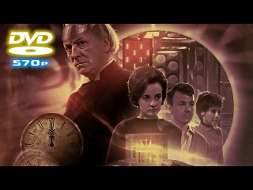
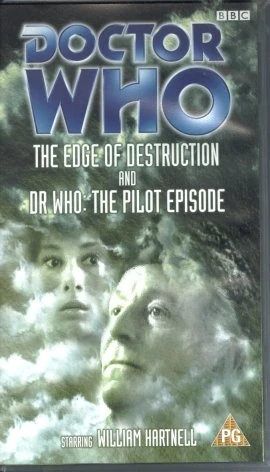
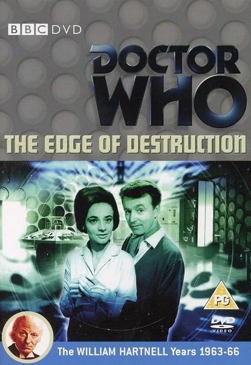
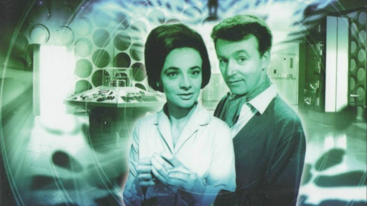
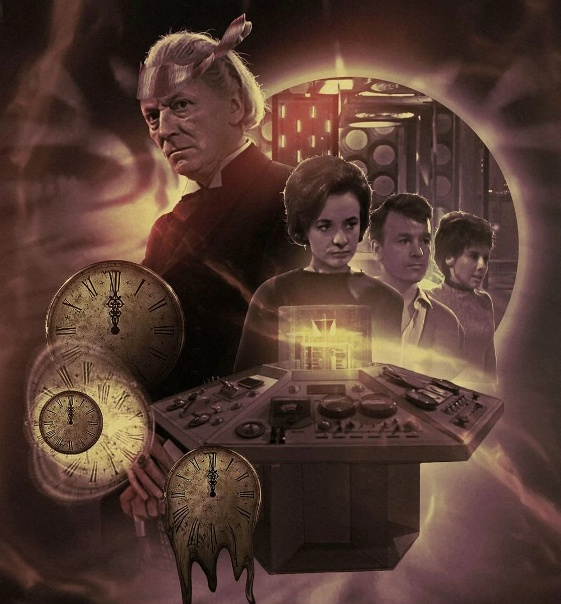

Эра Первого Доктора (1 сезон)
<<< НАЗАД ||| 3. Грань уничтожения ||| ДАЛЬШЕ >>>
Субтитры: Русские и Английские |  |
|---|
8-15 февраля 1964
2 эпизода по 25 мин.
| 1. Грань уничтожения 2. Край бедствия | Сохранились 16mm t/r |
|---|
 |  |  |
«Грань уничтожения» — редкая серия, где всё действие происходит внутри ТАРДИС. Необъяснимые сбои заставляют героев подозревать друг друга, обнажая напряжение в команде. Доктор выясняет, что корабль сам подавал сигналы тревоги, пытаясь уберечь экипаж. История раскрывает ТАРДИС как почти живой механизм и укрепляет связь между героями.
 VHS - май 2000 |   DVD - 30 января 2006 * Версия в нашей группе |
|---|



